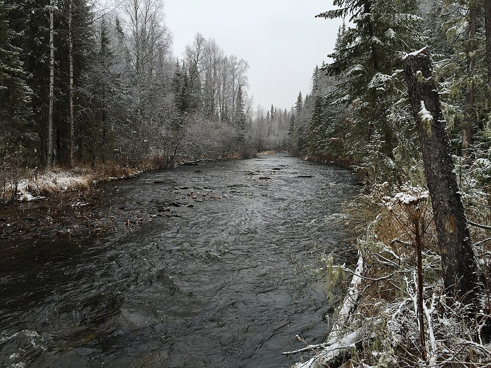
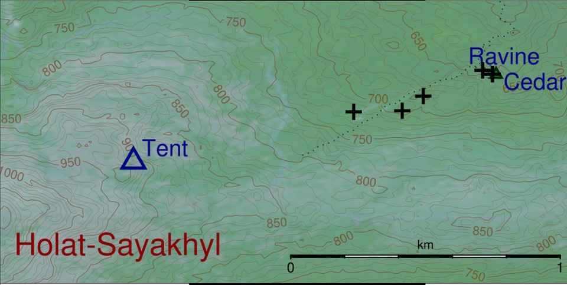
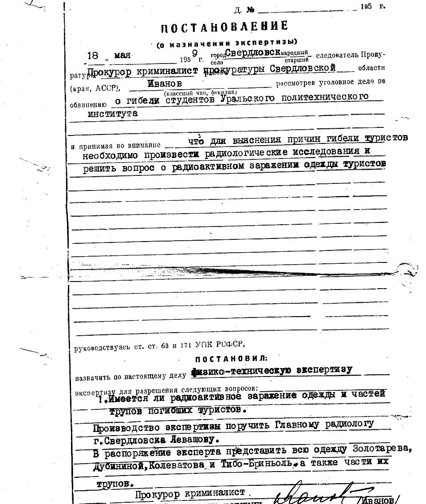
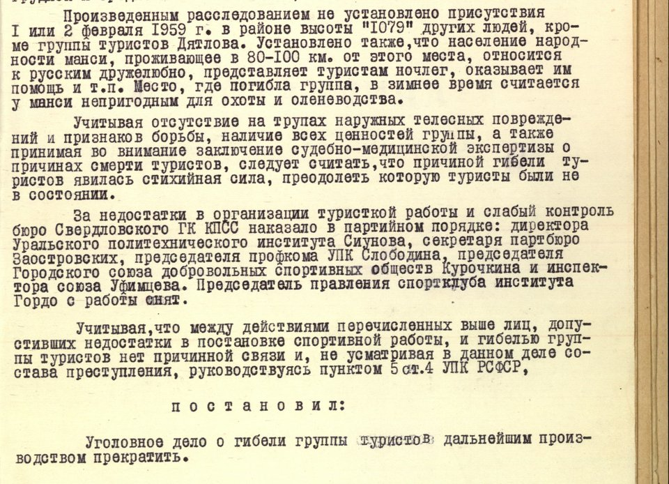
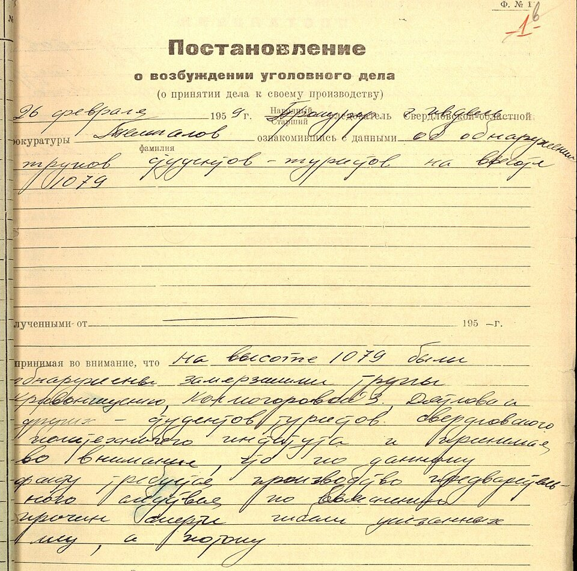

O incidente da passagem Dyatlov — nove mortos e um processo arquivado
Na noite de 1 para 2 de fevereiro de 1959, nove estudantes experientes saíram da barraca no escuro, na encosta de uma montanha dos Urais, quase todos sem botas. Nenhum voltou. O inquérito durou três meses e terminou numa frase: uma força elementar que eles não conseguiram vencer. Sessenta e sete anos depois, a frase ainda não basta para todo mundo.
- Onde
- Kholat Syakhl, norte dos Urais (URSS)
- Quando
- noite de 1 para 2 fev. 1959
- Mortos
- 9 de 10 que partiram
- Corpos achados
- 27 fev., 5 mar. e 4 mai. 1959
- Inquérito encerrado
- 28 de maio de 1959
- Versão oficial desde 2020
- avalanche — contestada pelas famílias
Em 23 de janeiro de 1959, dez estudantes e ex-alunos do Instituto Politécnico dos Urais saíram de Sverdlovsk — hoje Iekaterinburgo — para uma travessia de esqui pelo norte dos Urais. O objetivo era o monte Otorten, e o percurso estava classificado na categoria III, a mais exigente do turismo esportivo soviético da época. O líder era Igor Dyatlov, estudante de engenharia de rádio, de 23 anos. Todos tinham experiência de inverno; a viagem contaria para o título de mestre de esporte.
Em 28 de janeiro, num povoado madeireiro abandonado à beira do rio Lozva, um deles voltou. Yuri Yudin, de 21 anos, sofria de dores nas articulações e não conseguiria acompanhar o ritmo. Despediu-se dos colegas e pegou o caminho de volta. Seria o único sobrevivente, e passou o resto da vida — morreu em 2013 — dizendo que, se pudesse fazer uma pergunta a Deus, seria o que aconteceu com os amigos naquela noite.

01O grupo e a última barraca
Os nove que seguiram eram Igor Dyatlov, Zinaida Kolmogorova, Lyudmila Dubinina, Alexander Kolevatov, Rustem Slobodin, Georgy Krivonischenko, Yuri Doroshenko, Nikolai Thibeaux-Brignolles e Semyon Zolotaryov. Oito tinham entre 20 e 24 anos. Zolotaryov, o mais velho, perto dos 38, veterano da Segunda Guerra e instrutor de turismo, entrou no grupo pouco antes da partida. Os diários e as fotografias recuperados depois mostram uma viagem comum: frio, trabalho pesado, piadas, música. No acampamento de 1 de fevereiro eles ainda escreveram um jornalzinho humorístico de uma página.
Na tarde de 1 de fevereiro, depois de um dia de vento forte, o grupo armou a barraca — uma só, costurada de duas, para os nove — na encosta leste do Kholat Syakhl, a cerca de um quilômetro e meio da mata mais próxima. Para isso, cavaram um patamar na neve da encosta. Dyatlov tinha combinado mandar um telegrama de Vizhai, na volta, até 12 de fevereiro. O telegrama não chegou, e as famílias começaram a pressionar o instituto.
02A barraca cortada por dentro
A busca começou em 20 de fevereiro, com voluntários do instituto, militares, caçadores mansi e aviões. Em 26 de fevereiro, dois estudantes da equipe de busca acharam a barraca. Estava meio soterrada pela neve, com a lona rasgada. A perícia feita depois concluiu que os cortes tinham sido feitos pelo lado de dentro, com faca. Lá dentro estavam as botas, os casacos, a comida, os documentos, o dinheiro.
Da barraca descia uma trilha de pegadas — de oito ou nove pessoas, segundo os relatos —, algumas de meias, algumas de pés descalços, uma com uma só bota de feltro. As marcas seguiam encosta abaixo, em fila, por cerca de meio quilômetro, até sumir sob a neve. Quem lia os rastros escreveu que o grupo andou, não correu.
No dia seguinte, 27 de fevereiro, a busca chegou à borda da mata, a cerca de um quilômetro e meio da barraca. Debaixo de um grande pinheiro-siberiano havia os restos de uma fogueira e os corpos de Krivonischenko e Doroshenko, quase sem roupa. Galhos tinham sido quebrados do pinheiro até uns cinco metros de altura. Entre o pinheiro e a barraca, em pontos diferentes da encosta, estavam Dyatlov e Kolmogorova; em 5 de março foi achado Slobodin, no mesmo trajeto. A posição dos três sugeria pessoas tentando voltar para a barraca. Os cinco morreram de hipotermia. Slobodin tinha uma fissura no crânio, que a perícia não considerou fatal.

03Maio: os quatro da ravina
Faltavam quatro, e a neve não deixou procurar direito até o degelo. Em 4 de maio de 1959, a uns 75 metros do pinheiro, já dentro da mata, a busca achou um chão de galhos montado no fundo de uma ravina — e, pouco adiante, sob cerca de quatro metros de neve, junto a um riacho, Dubinina, Zolotaryov, Kolevatov e Thibeaux-Brignolles. Estavam mais vestidos que os outros, em parte com roupas cortadas dos corpos achados junto à fogueira.
É aqui que o caso deixa de ser só uma tragédia de frio. Thibeaux-Brignolles tinha uma fratura grave no crânio. Dubinina e Zolotaryov tinham várias costelas quebradas — lesões que o legista Boris Vozrozhdenny comparou à força de um acidente de carro, mas sem ferimentos externos correspondentes. Kolevatov morreu de hipotermia. Os corpos que passaram três meses na água do riacho tinham perdas de tecido mole no rosto; a mais citada é a de Dubinina, a quem faltavam a língua e os olhos. O próprio exame as tratou como alterações depois da morte, compatíveis com a decomposição na água corrente e com animais — e é isso que a literatura forense posterior também sustenta.
Houve ainda uma perícia que alimentou décadas de especulação. Em 18 de maio, o promotor Lev Ivanov mandou examinar a radioatividade das roupas dos quatro. O radiologista-chefe de Sverdlovsk encontrou emissão beta acima do normal em algumas peças — num trecho de calça e no cós de um suéter, sobretudo —, e a contaminação caía depois de lavadas. Não havia emissão alfa nem gama. Uma leitura lembra que Krivonischenko trabalhara no complexo nuclear de Mayak, onde um acidente grave tinha ocorrido em 1957, e que roupas eram emprestadas dentro do grupo; outra trata o resultado como pista de algo que o inquérito não quis seguir.

04O inquérito e a "força elementar"
O processo criminal foi aberto pela Procuradoria de Ivdel e passou para Ivanov, da Procuradoria regional. Os primeiros suspeitos foram os mansi, povo indígena da região, e alguns caçadores chegaram a ser interrogados. A hipótese caiu: não havia rastro de outras pessoas, nem sinal de luta, e nada de valor tinha sido levado. O texto final registra isso de forma expressa — e acrescenta que os mansi viviam a 80 ou 100 quilômetros dali, recebiam turistas com hospitalidade e não usavam aquele trecho no inverno.
Em 28 de maio de 1959, Ivanov encerrou o caso. O parágrafo decisivo diz, em tradução livre, que diante da ausência de lesões externas e de sinais de luta, da presença de todos os bens do grupo e da conclusão da perícia médica, a causa da morte foi "uma força elementar que os turistas não estavam em condições de vencer". Não havia crime, e o processo foi arquivado. Dirigentes do instituto e do esporte local foram punidos pelo partido por falhas de organização. Os autos foram para o arquivo regional, sem acesso público.

O que tornou o caso famoso foi o que veio depois. Em 1990, já no fim da União Soviética, o próprio Ivanov publicou um artigo num jornal do Cazaquistão dizendo que o inquérito não tinha uma explicação racional, que vira bolas de luz no céu mencionadas por testemunhas e que recebera ordens superiores para não seguir esse caminho. Nos anos 1990, cópias dos autos passaram a circular entre pesquisadores e jornalistas, e a Fundação Dyatlov, criada em Iekaterinburgo em 1999 por colegas do grupo, transformou a memória dos nove em campanha por um novo inquérito.
Os autos têm suas próprias esquisitices, e elas pesam em toda discussão. O despacho que abre o processo traz a data de 26 de fevereiro — o dia em que a barraca foi achada — mas cita pelo nome corpos que, pelos relatos da busca, só foram encontrados no dia 27. Para uns, é prova de que o caso foi aberto antes do que se diz; para outros, um documento preenchido depois com a data do começo da investigação. E o despacho final fala em "ausência de lesões externas" logo depois de listar fraturas de crânio e de costelas — que eram, de fato, lesões internas.

052019–2020: a Procuradoria volta à montanha
Em fevereiro de 2019, sessenta anos depois, a Procuradoria russa anunciou uma nova verificação do caso — não um novo processo criminal, ponto que as famílias contestam até hoje. Dezenas de versões foram listadas, e as criminais — ataque mansi, fugitivos de campo, militares — foram descartadas de saída. Ficaram três, todas naturais: avalanche, placa de neve e furacão. Houve expedição ao local, com especialistas, e testes de visibilidade.
Em 11 de julho de 2020, o vice-procurador-geral para o Distrito Federal dos Urais, Andrei Kuryakov, apresentou a conclusão em Iekaterinburgo: uma avalanche de placa de neve atingiu a barraca; o grupo saiu às pressas, andou até um afloramento de pedra que achou seguro, perdeu a barraca de vista numa visibilidade de poucos metros e desceu até a mata, onde morreu de frio. Kuryakov descreveu a conduta deles como luta heroica, sem pânico. O advogado da Fundação Dyatlov respondeu no mesmo dia que as famílias não aceitavam a conclusão.
06A avalanche de laje, no computador
A explicação da avalanche tinha quatro objeções antigas, repetidas desde 1959: a encosta parece suave demais para avalanche; os buscadores não viram sinais claros de deslizamento; a avalanche teria de acontecer horas depois de a barraca ser armada; e os ferimentos não se parecem com os de vítimas típicas de avalanche.
Em 28 de janeiro de 2021, Johan Gaume, da EPFL, e Alexander Puzrin, da ETH de Zurique, publicaram na Communications Earth & Environment, revista do grupo Nature, um modelo que responde às quatro com números. A encosta acima da barraca tem menos de 30 graus, mas isso basta para uma laje pequena se a neve estiver mal assentada. O corte que o grupo fez na encosta para armar a barraca tirou o apoio da camada de cima. E um vento catabático — o ar frio que desce a montanha à noite — teria acumulado neve acima do corte até a laje se soltar, numa simulação que dá algo em torno de nove horas depois. Uma laje de poucos metros, que não deixa grandes rastros, bate na barraca onde as pessoas estão deitadas sobre os esquis.
Para os ferimentos, os autores usaram dois materiais improváveis. Um foi um método de simulação de neve derivado do que os estúdios Disney desenvolveram para a animação Frozen, de 2013 — o mesmo tipo de modelo numérico que torna a neve dos filmes fisicamente plausível. O outro foram dados de testes de colisão feitos pela General Motors nos anos 1970. A conclusão é que um bloco de neve compacta do tamanho de um carro, poderia causar fraturas graves de tórax e de crânio sem matar na hora — o que permitiria aos feridos andar, ajudados pelos outros, até a mata.
Os próprios autores escrevem que o modelo mostra que a avalanche é possível, não que ela aconteceu, e que não explica tudo — nem por que o grupo não voltou à barraca depois, nem a radioatividade. Em 2022, numa segunda nota na mesma revista, relataram as expedições feitas ao local em 2021 e trabalhos independentes de pesquisadores russos de neve: o terreno tem degraus naturais, de escala métrica, que a neve esconde, e lajes de neve se soltam na área. Os críticos continuam com seus pontos: a barraca foi achada ainda em parte armada, com uma lanterna sobre a lona; as pegadas na encosta seguiam visíveis três semanas depois; um líder experiente não acamparia num caminho de avalanche; e décadas de expedições de inverno ao lugar não registraram avalanches perto do ponto exato da barraca.
072026: as famílias pedem um processo novo
Em 2 de junho de 2026, o advogado Evgeny Chernousov, que representa parentes dos mortos — entre eles Tatyana Perminova, irmã de Igor Dyatlov —, anunciou que as famílias vão pedir à Procuradoria-Geral a abertura de um novo processo criminal e uma investigação completa, a primeira desde 1959. O argumento central é documental: segundo o advogado, os laudos químicos e histológicos que deveriam acompanhar as autópsias dos nove não estão nos autos, o que sugere que nunca foram feitos. Os parentes também querem que as emissoras federais deixem de exibir programas com teorias que consideram falsas sobre a morte do grupo.
Duas semanas antes, em 16 de maio, a fundação de memória do grupo reuniu em Iekaterinburgo a sétima conferência nacional sobre o caso. Até a data desta revisão, não havia resposta pública da Procuradoria ao pedido. O quadro, portanto, é este: o Estado russo tem uma versão oficial desde 2020, a ciência tem um modelo que a torna fisicamente possível desde 2021, e as famílias recusam as duas.
08As leituras, da mais sóbria à mais improvável
Uma pequena avalanche de laje, agravada pelo frio e pelo escuro
É a versão oficial desde 2020 e a única com modelo físico publicado e revisado. Explica a saída às pressas pela lona cortada, a descida sem roupa para a mata, as fraturas sem ferimento externo e a fogueira. As objeções são reais — a barraca de pé, as pegadas preservadas, a falta de rastros claros — e a laje proposta é pequena justamente para acomodá-las, o que também a torna difícil de provar sessenta anos depois.
Vento: uma rajada catabática ou uma tempestade
Um vento violento descendo a encosta pode ter tornado a barraca insustentável, ou feito o grupo temer que ela fosse arrastada com eles dentro. Encaixa no clima da noite, que as reconstituições meteorológicas descrevem com vento forte e neve, e foi uma das três versões examinadas em 2019. Explica mal as fraturas dos quatro da ravina, a não ser combinada com uma queda na própria ravina sob a neve.
Um teste militar: míssil, bomba de iluminação, mina de paraquedas
É a convicção da Fundação Dyatlov e de parte das famílias, que falam em "catástrofe tecnogênica". Apoia-se nas bolas de luz relatadas na região em fevereiro e março de 1959, na radioatividade das roupas e no segredo que cercou o processo. O problema é a falta de um evento concreto: a lista pública de lançamentos do foguete R-7 e de suas versões tem voos em janeiro e no fim de março de 1959, nenhum em fevereiro, e não se apresentou até hoje registro de teste naquele lugar naquela noite.
Infrassom gerado pelo vento na montanha
Popularizada pelo livro Dead Mountain, do americano Donnie Eichar, em 2013: o vento passando pelo relevo do Kholat Syakhl criaria vórtices capazes de gerar som de baixíssima frequência, que causa mal- estar e pânico. A física do vórtice é real; que ele tenha ocorrido ali e produzido esse efeito em nove pessoas não tem evidência direta.
Uma operação da KGB que deu errado
A tese do escritor russo Alexei Rakitin: alguns membros do grupo — ele aponta Zolotaryov, Kolevatov e Krivonischenko — estariam numa operação para entregar roupas radioativas a espiões estrangeiros, que os mataram. Usa fatos reais (o trabalho de Krivonischenko em Mayak, a radiação nas roupas, a biografia pouco conhecida de Zolotaryov), mas liga todos eles com uma operação de que não há nenhum documento.
Um ataque dos mansi
Foi a primeira suspeita, em 1959, e foi o próprio inquérito soviético que a derrubou: nenhuma pegada além das do grupo, nenhum sinal de luta, nada roubado. Repeti-la hoje sem esses dados atribui uma morte a um povo indígena sem evidência — um erro que este arquivo não quer reproduzir.
Yeti, óvni, experimento secreto com armas desconhecidas
Vivem de documentários e de um detalhe tirado de contexto: o jornalzinho humorístico que o grupo escreveu no último acampamento brincava com a existência de "homens das neves". Nenhuma dessas versões explica algo que as anteriores não expliquem melhor, e nenhuma tem um único dado a seu favor.
09Cronologia
- 23 de janeiro de 1959Dez esquiadores do Instituto Politécnico dos Urais partem de Sverdlovsk rumo ao monte Otorten.
- 28 de janeiroYuri Yudin volta por causa de dores nas articulações. Seguem nove.
- 31 de janeiroO grupo chega ao alto vale do Auspiya e deixa um depósito de comida.
- 1 de fevereiroA barraca é armada na encosta leste do Kholat Syakhl. Na noite de 1 para 2, o grupo a abandona.
- 12 de fevereiroPrazo para o telegrama de chegada a Vizhai. Ele não vem.
- 20 de fevereiroComeça a busca, com estudantes, militares, caçadores mansi e aviões.
- 26 de fevereiroA barraca é achada, cortada por dentro. Data do despacho que abre o processo criminal.
- 27 de fevereiroKrivonischenko e Doroshenko junto ao pinheiro; Dyatlov e Kolmogorova na encosta.
- 5 de marçoO corpo de Slobodin é achado na encosta.
- 4 de maioDubinina, Zolotaryov, Kolevatov e Thibeaux-Brignolles são achados sob a neve numa ravina.
- 18 de maioIvanov determina a perícia de radioatividade nas roupas.
- 28 de maio de 1959O processo é encerrado: "força elementar". Os autos vão para o arquivo.
- 1990Lev Ivanov publica artigo dizendo que o inquérito não tinha explicação racional e que recebeu ordens para ignorar as bolas de luz.
- anos 1990Cópias dos autos começam a circular entre pesquisadores.
- 1999Criação da Fundação Dyatlov, em Iekaterinburgo.
- 27 de abril de 2013Morre Yuri Yudin, o único sobrevivente.
- fevereiro de 2019A Procuradoria russa abre uma verificação do caso, limitada a três versões naturais.
- 11 de julho de 2020Andrei Kuryakov anuncia a conclusão: avalanche. As famílias rejeitam.
- 28 de janeiro de 2021Gaume e Puzrin publicam o modelo da avalanche de laje na Communications Earth & Environment.
- março de 2022Os mesmos autores relatam as expedições de 2021 que documentaram terreno e lajes de neve na área.
- 16 de maio de 2026Sétima conferência nacional sobre o caso, em Iekaterinburgo.
- 2 de junho de 2026Parentes dos mortos anunciam que vão pedir à Procuradoria-Geral um novo processo criminal.
10O que continua em aberto
O que tirou nove pessoas experientes da barraca. A avalanche de laje é a resposta oficial e a mais bem fundamentada, mas é uma inferência sobre um evento que não deixou rastro que alguém tenha documentado em 1959. O vento é a alternativa natural mais séria.
As fraturas dos quatro da ravina. Podem ser da laje, antes da descida, ou de uma queda na ravina sob a neve, depois. As duas explicações são físicas; a segunda dispensa a avalanche para essas lesões, mas não para a saída da barraca.
A radioatividade. O resultado existe nos autos, é modesto e restrito a algumas peças. Sem as roupas para medir de novo, a origem — ocupacional, ambiental ou outra — fica em aberto.
O que falta no papel. Os laudos químicos e histológicos que as famílias dizem ausentes, a data do despacho de abertura, a ordem que Ivanov diz ter recebido. Se o processo novo for aberto, é por aí que ele começa — e é a primeira vez em sessenta e sete anos que o papel, e não a teoria, pode mudar a história.
11Fontes consultadas
Este dossiê é texto autoral. As fontes abaixo foram consultadas para apuração de datas, medidas e atribuições; nenhuma foi reproduzida.
- Processo criminal sobre a morte do grupo de turistas, Procuradoria da região de Sverdlovsk, 1959 — despacho de abertura (26 fev.), determinação de perícia radiológica (18 mai.) e despacho de encerramento (28 mai.), em cópias publicadas no Wikimedia Commons.
- Verbetes enciclopédicos consolidados sobre o incidente da passagem Dyatlov e sobre o monte Kholat Syakhl — composição do grupo, cronologia da busca, achados.
- Arquivo documental e cronologia de dyatlovpass.com — transcrições dos autos, perícia radiológica, estimativas meteorológicas, relatos de bolas de luz.
- Kommersant — cobertura da conclusão da Procuradoria-Geral, 11 de julho de 2020, e da reação das famílias.
- Gaume, J.; Puzrin, A. M. — Mechanisms of slab avalanche release and impact in the Dyatlov Pass incident in 1959. Communications Earth & Environment, 28 de janeiro de 2021; e comunicados da EPFL e da ETH Zurique.
- Puzrin, A. M.; Gaume, J. — Post-publication careers: follow-up expeditions reveal avalanches at Dyatlov Pass. Communications Earth & Environment, março de 2022.
- Disney Research / Stomakhin, A. et al. — A material point method for snow simulation, 2013 (o método de neve de Frozen).
- Eichar, D. — Dead Mountain: The Untold True Story of the Dyatlov Pass Incident, 2013 (a hipótese do infrassom).
- Rakitin, A. — Smert, iduschaya po sledu (a hipótese da entrega controlada), 2010.
- Lista pública de lançamentos do míssil R-7, 1957–1959 — para conferir a hipótese de lançamento em fevereiro de 1959.
- Izvestia, Vedomosti e Fontanka — pedido das famílias por novo processo criminal, 2 de junho de 2026.
- Fundação de memória do grupo Dyatlov — sétima conferência nacional, Iekaterinburgo, 16 de maio de 2026.